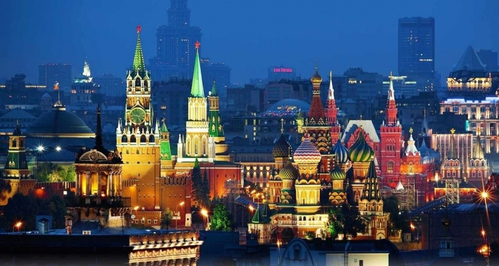

Madrid

Madrid (šp. Madrid) je glavni grad Kraljevine Španije i autonomne pokrajine Madrid.
Region (Madrid sa okolinom) se sa oko 5 miliona stanovnika ubraja u najveće evropske metropole. Sam grad Madrid (bez predgrađa) je sa svojih 3,1 milion stanovnika, posle Londona i Berlina, treći najveći grad u Evropskoj uniji.
Madrid je, kako od nacionalnog, tako i od internacionalnog značaja za trgovinu i finansije i politički je i kulturni centar Španije. Glavni grad je središte španske uprave, pa osim kralja, u njemu žive katolički biskup i važni pripadnici vlade i vojske. Ovde je smešteno šest univerziteta, razne visoke škole, mnoga pozorišta, muzeji i druge kulturne ustanove.
Cena već od 400$ za 10 noćenja
Pariz
Pariz (franc. Paris, lat. Lutetia) je glavni i najveći grad Francuske. Nalazi se u centru Pariskog basena, nad rekom Senom (La Seine). Rekom je podeljen na dva dela: na severnu „Desnu obalu“ i na južnu, manju, „Levu obalu“. Grad predstavlja političko, ekonomsko, obrazovno i kulturno središte centralizovane francuske države, a i Evrope. Pariz je jedan od najznačajnijih svetskih gradova. U njemu su sedišta međunarodnih organizacija UNESKO, OECD i neformalnog Pariskog kluba. Sa svetom je povezan preko 2 velika aerodroma i 6 glavnih železničkih stanica. U Parizu se nalaze mnoge znamenitosti i turističke atrakcije. Sa istorijom dugom 2 milenijuma, ovaj grad je bio mesto značajnih istorijskih događaja i stecište umetnika. Zbog toga svake godine Pariz poseti do 30 miliona turista[2]. Po broju turista Pariz je najposećenija svetska turistička destinacija. Takođe je poznat po imenu „Grad svetlosti“. Grad ima preko dva miliona stanovnika (2.211.297, procena iz 2008[3]), a urbana zona preko 12 miliona (12.089.098[4]). Ova neprekinuta urbana zona Pariza (bez satelitskih naselja) je najveća u Evropskoj uniji.
Cena već od 250$ za 5 noćenja
Beč
Beč (njemački Wien [viːn], češki Vídeň, mađarski Bécs, slovenski Dunaj),[2] glavni i najveći grad Austrije od 1 714 142 stanovnika [1], istovremno je i jedna od devet Austrijskih saveznih zemalja. Historijski centar grada je zbog svojih brojnih spomenika uvršten na UNESCO-vu Listu mjesta svjetske baštine u Evropi 2001. [3] Pored samog centra grada i dvorci Belvedera i Schönbrunn su takođe uvršteni na Listu mjesta svjetske baštine u Evropi. Beč je sjedište nekoliko međunarodnih organizacija: OPEC-a (Organizacije zemalja izvoznica nafte), IAEA (Međunarodne agencije za atomsku energiju) i UNIDO-a (Organizacije za industrijski razvoj Ujedinjenih naroda).
Cena već od 300$ za 7 noćenja
Moskva

Moskva (rus. Москва, la. Moskva, IPA: [mɐˈskva]) glavni i najmnogoljudniji je grad, odnosno federalni subjekt Rusije. Značajno je političko, ekonomsko, kulturno, znanstveno, vjersko, financijsko, obrazovno i prometno središte Rusije i svijeta. Sa 10 563 038 stanovnika (2010.),[4] najmnogoljudniji je grad kontinentalne Evrope i prema broju stanovnika sedmo najveće gradsko područje u svijetu. Prema popisu grupe GaWC, univerziteta u Loughboroughu (UK) iz 2008. godine, smatra se "Alfa globalnim gradom".
Cena već od 330$ za 8 noćenja